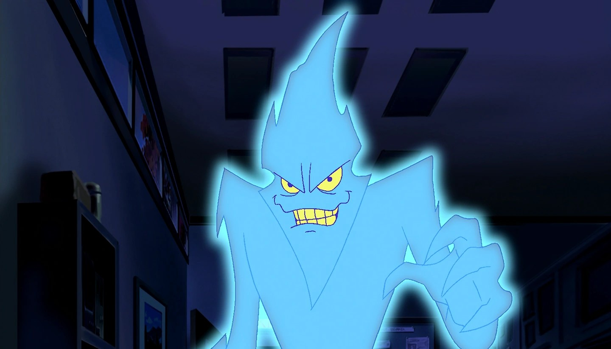
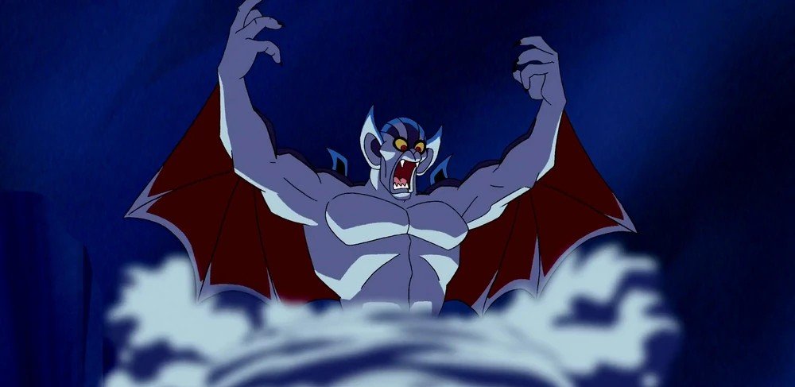
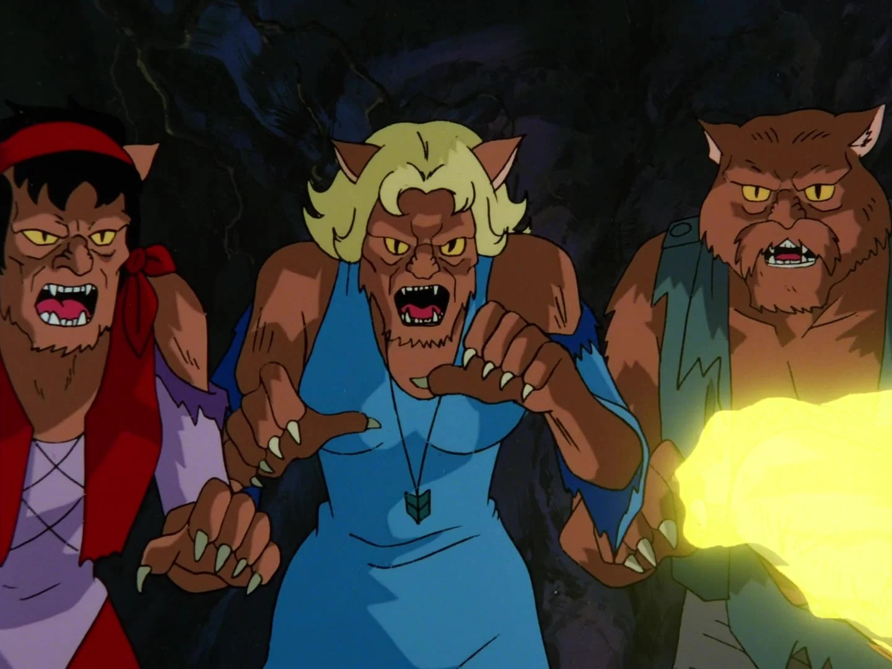

The Phantom Virus
The Phantom Virus is a computer virus that escapes into the world after a laboratory incident involving a laser. The virus was created by one of the students to sabotage another classmate’s project to win a prize. The Phantom Virus had the ability to absorb data and manipulate electricity, only having a weakness to magnets, making him one of the most powerful Scooby-Doo monsters! The gang goes to visit the university to test the computer program and attempt to send the virus back to cyberspace. During the visit, the virus traps them inside of the video game and chases them along with past villians throughout 10 different levels inspired by past mysteries they have solved. To complete all levels of the game, the gang must find the Scooby Snacks in each level, which ultimately makes the virus cease to exist in both the video game and the real world.

The Yowie Yahoo
The Yowie Yahoo is a vampire-like creature that haunts a music festival at Vampire Rock, which is in the middle of the Australian outback. The Yowie Yahoo would appear out of a tornado, breathe fire, throw exploding fireballs, and blow strong winds, making him a force to be reckoned with. The Yowie Yahoo would specifically target other bands competing in the festival as an attempt to force the rest of the bands to drop out of the music festival. The Yowie Yahoo was revealed to be a holographic projection, using wind and other special effects to appear as a true supernatural being. Instead, the Yowie Yahoo was created by past contestants Wildwind, all because they wanted to make a comeback, but it was against the rules to re-enter the competition again.

The Ghost ofSarah Ravencroft
Sarah Ravencroft, the ghost of a very powerful witch who once lived in Oakhaven in 1657 and used to terrorize people using her magic. Eventually, Wiccans beat her using her own magic and trapped her inside of her own spell book, which was then put inside of a chest. Sarah is released from her spellbook by her descendant Ben Ravencroft, who wants to use her for her powers. Even as a ghost, Sarah has the ability to cast spells and turn objects into monsters. Ben makes up an alternative narrative as to who Sarah is, convincing the townspeople and Mystery Inc. that she was a kind Wiccan who would help sick people. After she is released, she reveals that she wants to destroy the world. Hearing this, Ben wants to send her back into her spellbook, but only a Wiccan can do that.

Zombies and Werecats
The zombies on Zombie Island are very real, supernatural beings. Zombie Island itself is haunted by the ghost of Morgan Moonscar, who is the reason all of these zombies exist. The zombies are not evil; they are just the victims of Morgan Moonscar and his pirates, who invaded the island and drove the original settlers on the island to their death. The actual monsters on this island are the only two survivors of the Morgan Moonscar invasion; these survivors are immortal werecats who used their powers to take revenge on Morgan Moonscar. They transform into large, cat-like monsters that rely on taking the souls of others to stay alive and try to target the gang when they come to visit.